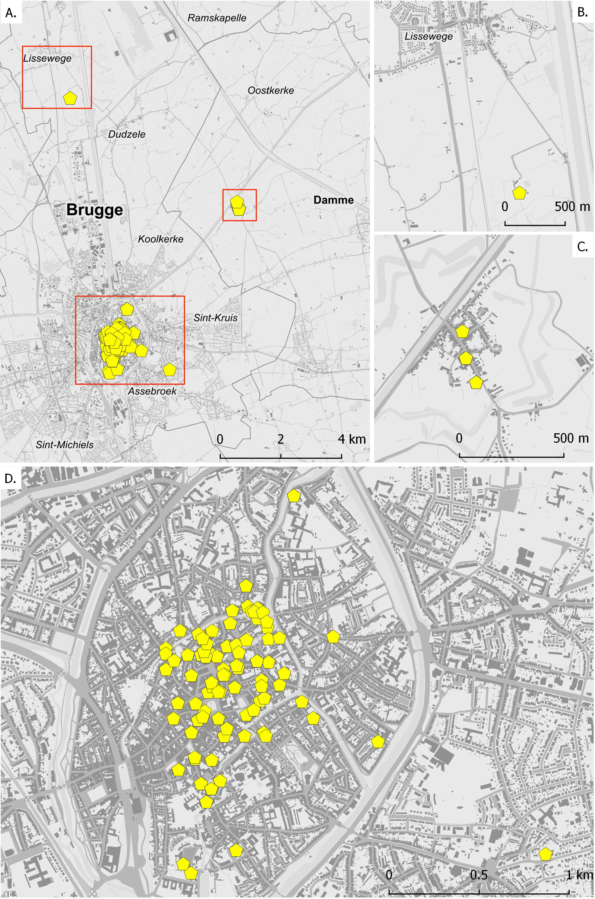

2 Werkwijze
2.1 Afbakening
Deze catalogus verzamelt zowel dakkappen die gekend zijn uit literatuur1 als dakkappen die werden ontdekt en onderzocht tijdens werfinspecties door het agentschap Onroerend Erfgoed (Fig. 2.1: A). De beschrijvingen en tekeningen zijn het werk van erfgoedconsulent Dirk Van Eenhooge. Behalve dakkappen die in hun oorspronkelijke toestand zijn bewaard gebleven, bevat deze catalogus ook reconstructies van dakkappen die nadien werden verbouwd. De meeste - maar niet alle - kappen bevinden zich in gebouwen die zijn opgenomen in de inventaris van het bouwkundig erfgoed.
De overgrote meerderheid van de beschreven kappen bevindt zich in de historische stadskern van Brugge, binnen de tweede stadsomwalling van 1297-1300 (Fig. 2.1: D). Daarnaast bevat deze catalogus ook kappen van gebouwen in Brugse deelgemeenten: in Assebroek (kasteel Zevekote) en in Lissewege (abdijschuur van Ter Doest, Fig. 2.1: B). Ten slotte worden ook de kappen van de O.L.V.-kerk, het Sint-Janshospitaal en het stadhuis van Damme besproken Fig. 2.1: C). Hoewel hiermee buiten de afbakening wordt getreden van de historische stadskern van Brugge kan de opname van deze gebouwen toch worden verantwoord. Er is de evidente nabijheid en, in het geval van Damme, de nauwe historische band als voorhaven van Brugge in de 13de en 14de eeuw.
2.2 Dendrochronologisch onderzoek
Het bouwhistorisch onderzoek ging gepaard met dendrochronologisch onderzoek, achtereenvolgens uitgevoerd door de Nederlandse Rijksdienst voor de Monumentenzorg i.s.m. Stichting RING,– het Nederlands centrum voor dendrochronologie, het Laboratoire de dendrochronologie van de universiteit van Luik en het agentschap Onroerend Erfgoed (Fig. 3.1). Bij een daterend dendro-chronologisch onderzoek wordt de veldatum – dit is het kalenderjaar waarin een boom werd gekapt – zo precies mogelijk bepaald. Het is met andere woorden niet de bouw van de dakkap of houten structuur zelf die wordt gedateerd, maar het tijdstip van afsterven van de boom waarvan het hout afkomstig is. Aangezien er vaak een directe relatie is, of kan vermoed worden, tussen het kappen van een boom en het gebruik als bouwhout, heeft de dendrochronologische datering een duidelijke relatie met het tijdstip waarop de dakkap of houten structuur werd gemaakt. Afhankelijk van de bewaringstoestand en de eigenschappen van het onderzochte hout levert een dendrochronologische datering drie mogelijke resultaten op2: (1) een datering tot op het jaar (of seizoen) nauwkeuring, (2) een interval-datering en een (3) post quem-datering:
Indien de wankant3 nog aanwezig is, kan de veldatum tot op het jaar nauwkeurig bepaald worden. Bij sommige houtsoorten, zoals eik, kan aan de hand van de anatomische opbouw van die laatste gevormde ring de veldatum tot op het seizoen nauwkeurig bepaald worden. In deze situatie krijgen we de meest precieze bepaling van de veldatum.
Als echter nog een deel van het spinthout bewaard is gebleven op het stuk bouwhout, weten we dat er slechts een beperkt aantal ringen – en dus jaren – ontbreken tussen de laatste opgemeten jaarring op het stuk bouwhout en de wankant. Bij eik kan er een onderbouwde schatting gemaakt worden van het aantal ontbrekende spinthoutringen. In dit geval is de veldatum te situeren binnen een concreet tijdsinterval. We kunnen dan zowel de vroegst mogelijke veldatum (terminus post quem) bepalen als de uiterste tijdsgrens voor het vellen van de boom (terminus ante quem).
Indien er alleen maar kernhout bewaard is, kan enkel de vroegst mogelijke veldatum bepaald worden (terminus post quem). De kapdatum ligt dan zeker ná de datering van de laatste kernhoutring, met daarbij opgeteld het minimale aantal te verwachten spinthoutringen.
Eens de veldatum is bepaald, zijn er meerdere factoren die de datering van de eigenlijke bouwactiviteit nog kunnen bijsturen. Als er bijvoorbeeld sporen van hergebruik op het geanalyseerde stuk bouwhout te zien zijn, dan is er mogelijk geen rechtstreeks verband tussen de dendrochronologische datering van dit stuk hout en de datering van de kap die men onderzoekt. De dendrochronologische datering is dan gerelateerd aan het gebruik van dit stuk hout in een oudere constructie, en geeft enkel een post quem – of vroegst mogelijke datering – voor de geanalyseerde structuur. Kunnen binnen één dakkap meerdere stukken hout gedateerd worden, en heeft één een beduidend jongere kapdatum, dan wijst dit mogelijk op een latere herstelling met een nieuw stuk hout. Ook in dit geval heeft deze datering geen betrekking op de constructie van de oorspronkelijke kap, maar op een meer recente activiteit.
Een overzicht van de dendrochronologische dateringen van in deze catalogus opgenomen dakkappen (fig. 2) toont alvast aan dat de oudste kappen in Brugge teruggaan tot in het tweede kwart van de 13de eeuw. O.a. de dakkap van huis De Roode Steen (tussen 1225 en 1240), het broederklooster in het Sint-Janshospitaal (tussen 1238 en 1258) en het oorspronkelijke middenschip van de OLV-kerk (tussen 1240 en 1250). Maar ook in Damme dateert de dakkap van het eerste koor van de OLV-kerk uit deze periode (1241/42d).

Met name Janse & Devliegher 1962 en Devliegher 1975².↩︎
Haneca 2017.↩︎
De wankant is de scherpe overgang tussen de bast naar het spinthout. Het is de zone waar bij een levende boom nieuw hout wordt gevormd. Een stuk bouwhout waarbij (een gedeelte van) de wankant bewaard is gebleven, kan je herkennen aan het afgeronde en dikwijls gladde oppervlak waar de buitenzijde van de originele boom nog in is te herkennen. Indien de bast nog aan een stuk bouwhout vast hangt, dan is de wankant zeker aanwezig.↩︎